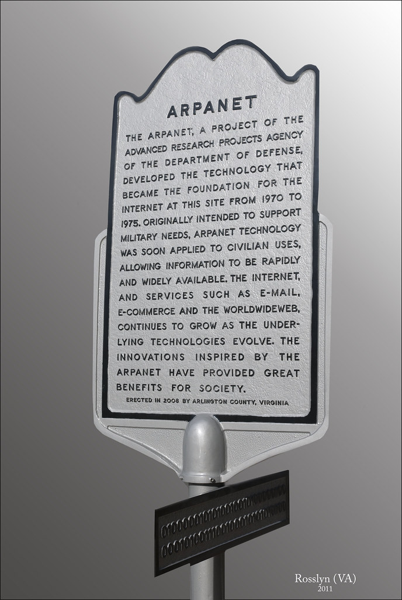

In April 1971, the ARPANET had 18 mainframes computer interconnected across the country. Robert Metcalf was an MIT graduate student who connected MIT computers to ARPANET. At first, there wasn’t much to do in ARPANET beyond transferring data files among its network. 
Then a new capability was added, a killer application called E-mail was added which changed the way of communication around the world. Reymond Tomlinson invented the E-mail and he also gave meaning to the ‘@’ symbol. In Oct 1972, ARPANET created the first Sci-fi movie using the internet.
Soon computer networks were growing Robert Metcalf found out there were 19 different features to work on the internet and soon there were LANs and WANs. LAN (Local Area Networks) which contains all the connections in one building or organization and WAN (Wide Area Networks) which are connected between organizations. But each LAN or organization used its protocols for communications. Because of this, there were difficulties in communicating between people. So, there was a need for a common protocol.